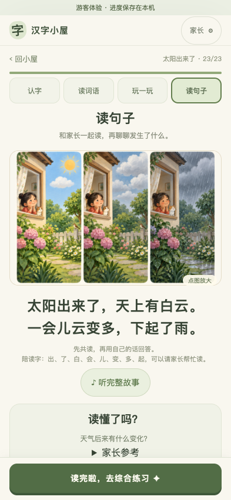
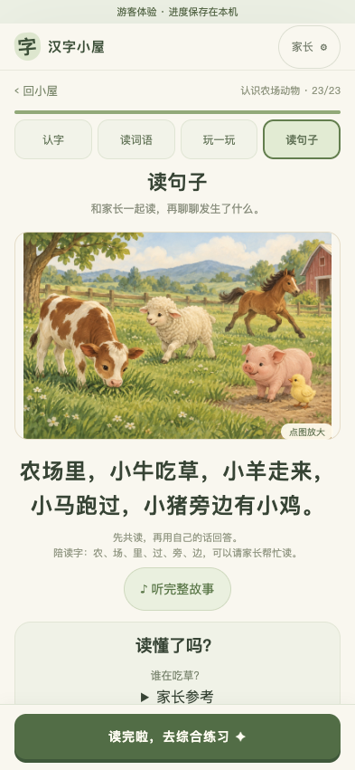
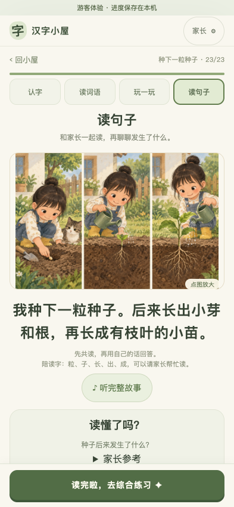
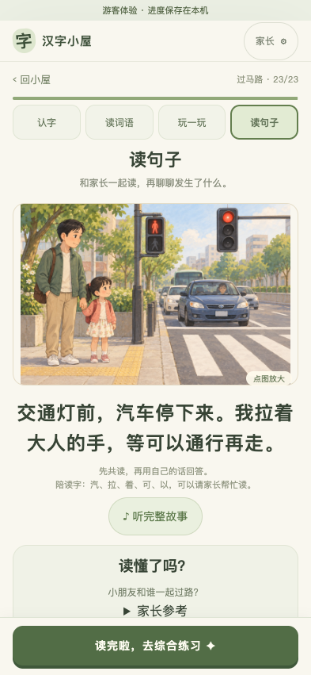
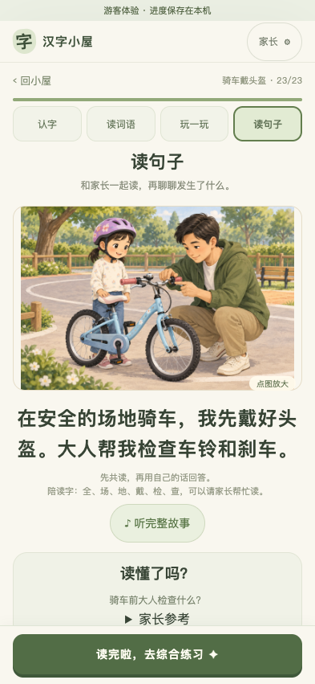
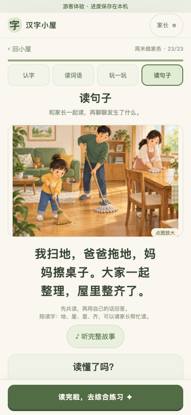
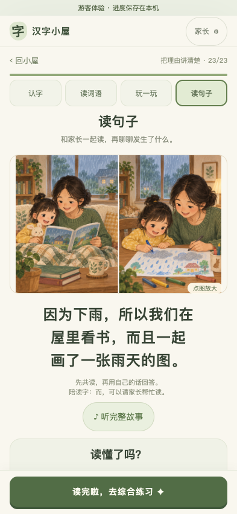
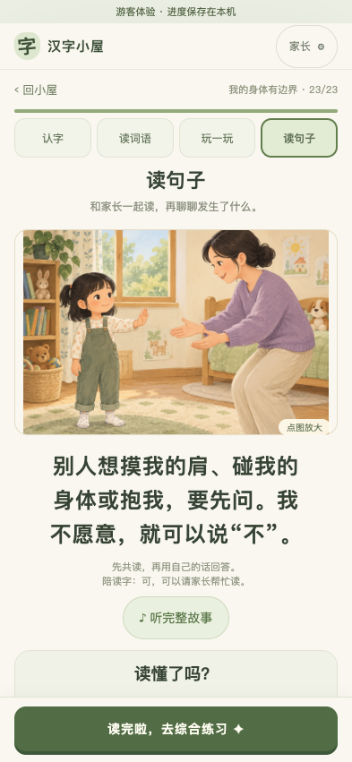
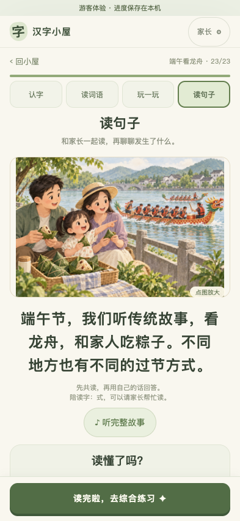

C012 · 太阳出来了
太阳出来了，天上有白云。一会儿云变多，下起了雨。
三格按晴天、云变多、下雨排列，表现天气变化。


首批 10 课；10 张故事插图、20 张实际页面截图。 10/10 浏览器流程通过。
画风：温暖绘本。每课同时展示故事原文、生成插图和实际手机页面，点击图片可以放大。
太阳出来了，天上有白云。一会儿云变多，下起了雨。
三格按晴天、云变多、下雨排列，表现天气变化。

农场里，小牛吃草，小羊走来，小马跑过，小猪旁边有小鸡。
牛吃草、羊走来、马跑过，猪旁有小鸡；五种动物分别可辨。


我种下一粒种子。后来长出小芽和根，再长成有枝叶的小苗。
播种、发芽、长成小苗三个阶段；根位于土层以下。


交通灯前，汽车停下来。我拉着大人的手，等可以通行再走。
孩子牵着大人的手站在人行道等候，汽车停下，尚未开始过街。


在安全的场地骑车，我先戴好头盔。大人帮我检查车铃和刹车。
孩子戴好头盔，大人检查自行车铃与刹车。


香蕉弯弯的，葡萄一串串，橙子圆圆的。我们把水果分给家人。
孩子把橙子递给家人，桌上是香蕉、成串葡萄和橙子。

我扫地，爸爸拖地，妈妈擦桌子。大家一起整理，屋里整齐了。
孩子扫地、爸爸拖地、妈妈擦桌，三种动作不同。


因为下雨，所以我们在屋里看书，而且一起画了一张雨天的图。
两格都能看到窗外下雨；室内先共读，再一起画雨天。


别人想摸我的肩、碰我的身体或抱我，要先问。我不愿意，就可以说“不”。
孩子举手表示拒绝，大人保持距离，没有擅自触碰。


端午节，我们听传统故事，看龙舟，和家人吃粽子。不同地方也有不同的过节方式。
一家人在护栏内看龙舟，近处有用叶子包裹的粽子。

